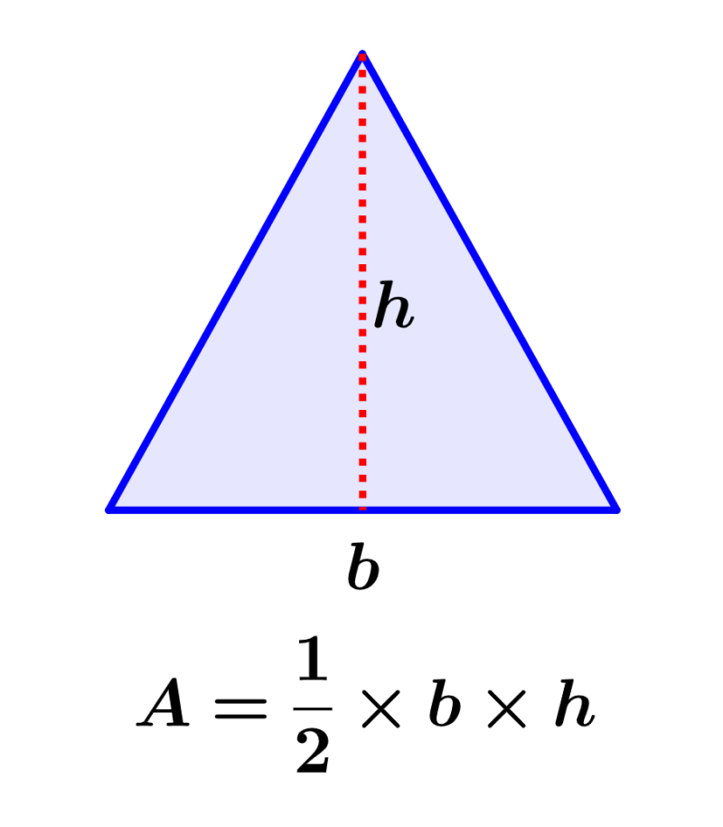

Isósceles
Un triángulo isósceles es un tipo de triángulo que tiene dos lados de igual longitud y, por lo tanto, dos ángulos internos congruentes. El tercer lado y el tercer ángulo son diferentes de los otros dos.
 Características principales del triángulo isósceles:
Características principales del triángulo isósceles:
- Lados: En un triángulo isósceles, dos de los lados tienen la misma longitud, mientras que el tercer lado es diferente.
- Ángulos: Los dos ángulos opuestos a los lados iguales en un triángulo isósceles son congruentes, es decir, tienen la misma medida. Estos ángulos se conocen como ángulos de la base. El ángulo opuesto al tercer lado, llamado ápice, generalmente tiene una medida diferente.
- Base: La base del triángulo isósceles es el lado que tiene una longitud diferente de los otros dos lados iguales.
- Altura: La altura de un triángulo isósceles es la línea perpendicular trazada desde el vértice del ápice al lado de la base. La altura divide al triángulo en dos triángulos congruentes.
- Perímetro: El perímetro de un triángulo isósceles se obtiene sumando las longitudes de los tres lados. Si llamamos "l" a la longitud de los lados iguales y "b" a la longitud de la base, entonces el perímetro del triángulo isósceles es igual a 2l + b.
- Área: El área de un triángulo isósceles se puede calcular utilizando la fórmula: Área = (b * h) / 2, donde "b" es la longitud de la base y "h" es la altura del triángulo.

Los triángulos isósceles tienen propiedades y aplicaciones particulares en geometría y trigonometría. Por ejemplo, debido a su simetría, los triángulos isósceles tienen ejes de simetría que dividen al triángulo en partes congruentes. Además, en trigonometría, los triángulos isósceles son utilizados para resolver problemas relacionados con las razones trigonométricas y las identidades trigonométricas.